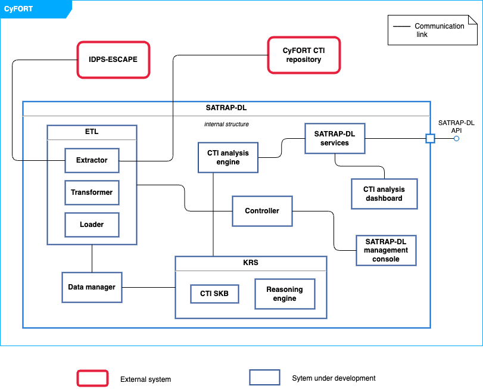
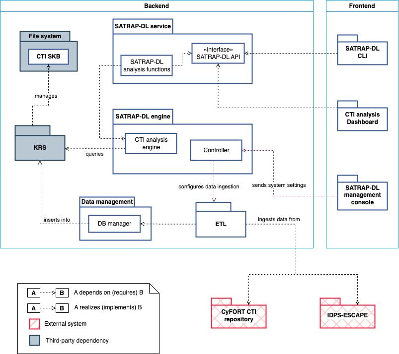
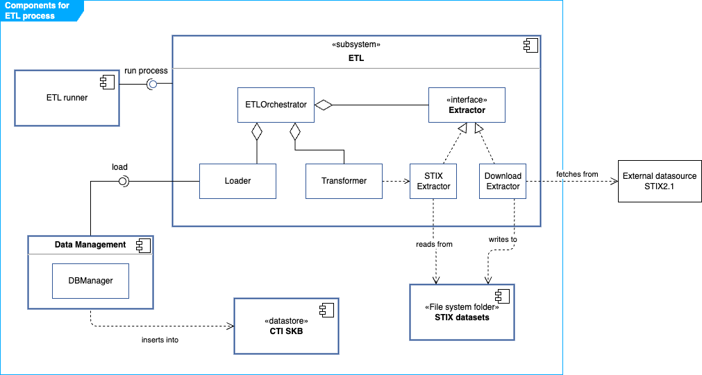

1 System structure overview ARC-001
This UML composite structure diagram shows the overview of SATRAP-DL along with the systems on which it has some dependency.
.
Roughly, the components are described as follows:
| Component name | Component description |
|---|---|
| CTI Knowledge representation system | Semantic Knowledge Base of CTI (CTI SKB) defined on a strongly-typed data model, plus an automated logic-based reasoning engine. |
| Data manager | Manages the interactions and connection to the knowledge base |
| ETL module | Enables ingesting data from diverse categories into the CTI SKB, for instance, cybersecurity knowledge (e.g., datasets from MITRE ATT&CK), behavioral data (from SIEMs, SOARs, etc.) and external CTI (from platforms like MISP). |
| CTI analysis engine | Implements queries tailored for the automation of Cyber Threat Intelligence (CTI) analysis tasks. |
| Controller | Responsible for handling the interaction between the SATRAP-DL management console and the ETL module . |
| SATRAP-DL services | Make SATRAP-DL's functionality accessible via a Python library and a language-independent API. |
| SATRAP-DL frontend | A suite of user interfaces for executing and visualizing results of analytic queries over the CTI SKB and performing data management and admin tasks in the CTI SKB. |
More details are available as part of the system concept in the file 2B1D_REP_CyFORT-SATRAP-DL-SystemArchitecture_v1.1.
Parent links: SRS-001 Data modelling language, SRS-002 Database paradigm, SRS-003 Semantic search, SRS-004 Extensibility of the data model, SRS-005 NoSQL data model, SRS-007 Semantic data integrity, SRS-010 Database manager, SRS-011 Ingestion of internal and external CTI, SRS-012 Inference rules, SRS-014 Native reasoning engine, SRS-015 Jupyter Notebook frontend, SRS-017 Integration of behavioral data, SRS-020 System configuration file, SRS-021 Centralized logging, SRS-022 Centralized exception handling, SRS-028 Input validation, SRS-029 Input sanitization
Child links: SWD-001 Top-level ETL design, SWD-002 STIX-specific ETL design, SWD-003 ETL system flow, SWD-004 TypeDB utilities, SWD-005 Transformer class diagram, SWD-006 Transformer flow, SWD-007 ETL full class diagram
2 Logical view of SATRAP-DL ARC-002
The following UML package diagram depicts the logical view of SATRAP-DL.

Details on the architecture are available as part of the system concept in the file 2B1D_REP_CyFORT-SATRAP-DL-SystemArchitecture_v1.1.
Parent links: SRS-001 Data modelling language, SRS-002 Database paradigm, SRS-003 Semantic search, SRS-004 Extensibility of the data model, SRS-005 NoSQL data model, SRS-007 Semantic data integrity, SRS-010 Database manager, SRS-011 Ingestion of internal and external CTI, SRS-012 Inference rules, SRS-014 Native reasoning engine, SRS-015 Jupyter Notebook frontend, SRS-017 Integration of behavioral data, SRS-020 System configuration file, SRS-021 Centralized logging, SRS-022 Centralized exception handling, SRS-028 Input validation, SRS-029 Input sanitization
Child links: SWD-001 Top-level ETL design, SWD-002 STIX-specific ETL design, SWD-003 ETL system flow, SWD-004 TypeDB utilities, SWD-005 Transformer class diagram, SWD-006 Transformer flow, SWD-007 ETL full class diagram
3 ETL high-level design ARC-003
An overview of the main external systems and internal components of SATRAP involved in the ETL process is shown in the following diagram.

Parent links: SRS-001 Data modelling language, SRS-002 Database paradigm, SRS-003 Semantic search, SRS-004 Extensibility of the data model, SRS-005 NoSQL data model, SRS-006 Integration of common CTI, SRS-007 Semantic data integrity, SRS-008 ETL orchestrator, SRS-009 ETL Transformer, SRS-010 Database manager, SRS-011 Ingestion of internal and external CTI, SRS-012 Inference rules, SRS-013 STIX 2.1 data model, SRS-014 Native reasoning engine, SRS-015 Jupyter Notebook frontend, SRS-017 Integration of behavioral data, SRS-018 IDPS-ESCAPE ingestion policy, SRS-019 CTI export to STIX, SRS-020 System configuration file, SRS-023 CTI representation in STIX 2.1, SRS-024 Design and implementation principles, SRS-028 Input validation, SRS-029 Input sanitization
Child links: SWD-001 Top-level ETL design, SWD-002 STIX-specific ETL design, SWD-003 ETL system flow, SWD-004 TypeDB utilities, SWD-005 Transformer class diagram, SWD-006 Transformer flow, SWD-007 ETL full class diagram
4 ETL components ARC-004
The following diagram depicts the main components of the ETL system.

Roughly, the ETLOrchestrator is in charge of the logic for executing the ETL process assisted by an Extractor, a Transformer and a Loader.
A suitable Extractor fetches data from an external source and creates and stores a datasource in STIX 2.1 format in a predefined folder. For the initial version, we will only consider an extractor for datasources already in STIX 2.1, namely the STIXExtractor. In future phases, the integration of data in other formats can be supported by extending the architecture with new Extractors.
The ETL subsystem interacts with the following components:
- Controller: this is the component that triggers the ETL process according to predefined settings.
- STIX datasets: a predefined folder in the file system storing datasets in STIX2.1 JSON format.
- CTI SKB: the database of SATRAP in TypeDB.
- Data Management: includes components aimed at handling data, such as the DB manager which manages the connections and operations over the CTI SKB. Some of the functions in this class are:
connect_to_DB,create_db,setup_schema,load_db_data,insertanddelete.
Parent links: SRS-001 Data modelling language, SRS-002 Database paradigm, SRS-003 Semantic search, SRS-004 Extensibility of the data model, SRS-005 NoSQL data model, SRS-006 Integration of common CTI, SRS-007 Semantic data integrity, SRS-008 ETL orchestrator, SRS-009 ETL Transformer, SRS-010 Database manager, SRS-011 Ingestion of internal and external CTI, SRS-012 Inference rules, SRS-013 STIX 2.1 data model, SRS-014 Native reasoning engine, SRS-015 Jupyter Notebook frontend, SRS-017 Integration of behavioral data, SRS-018 IDPS-ESCAPE ingestion policy, SRS-019 CTI export to STIX, SRS-020 System configuration file, SRS-023 CTI representation in STIX 2.1, SRS-024 Design and implementation principles, SRS-028 Input validation, SRS-029 Input sanitization
Child links: SWD-001 Top-level ETL design, SWD-002 STIX-specific ETL design, SWD-003 ETL system flow, SWD-004 TypeDB utilities, SWD-005 Transformer class diagram, SWD-006 Transformer flow, SWD-007 ETL full class diagram